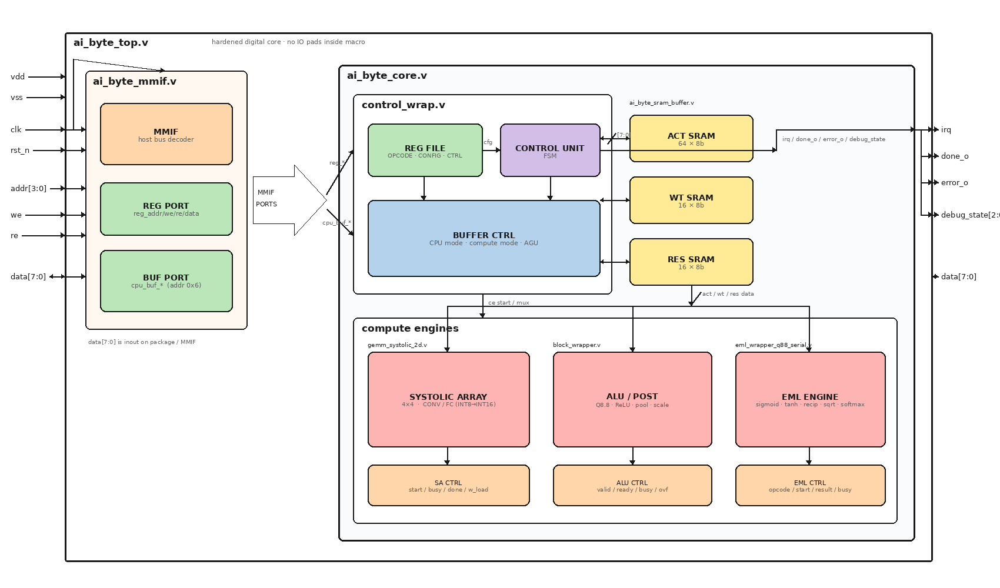
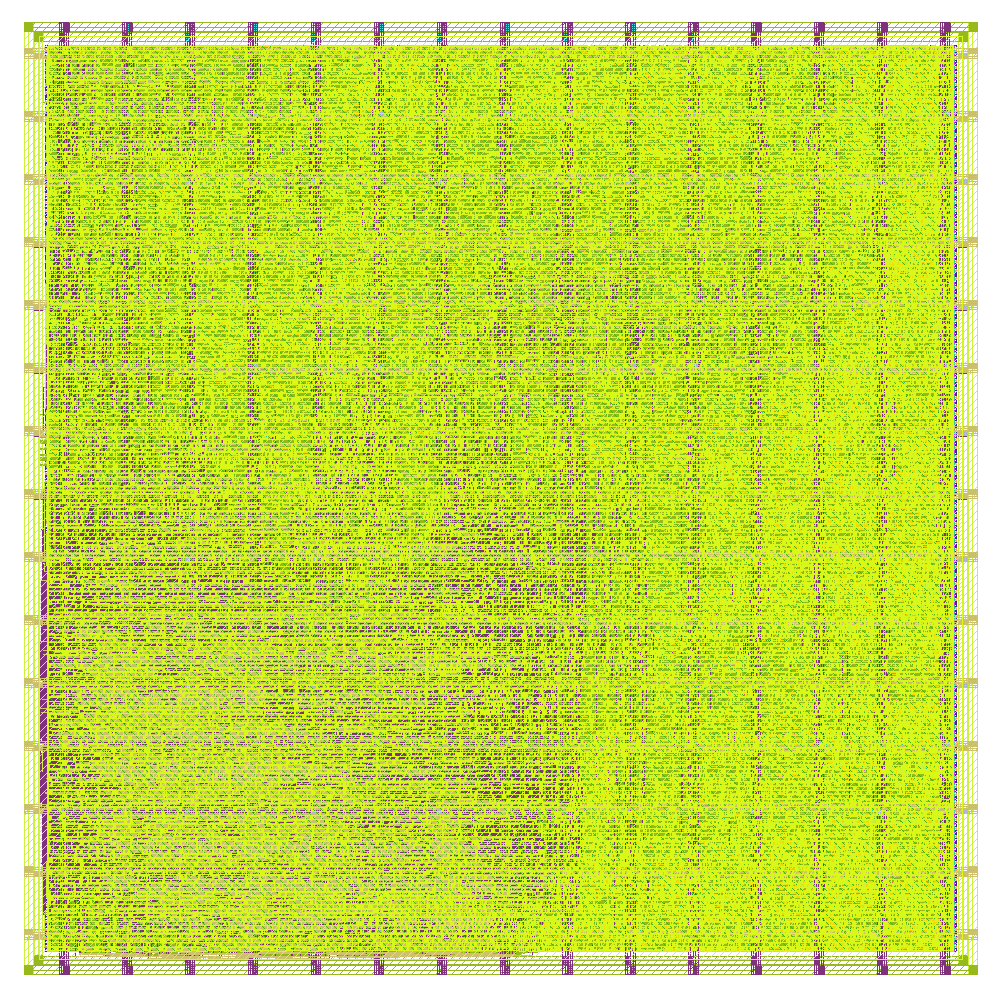

Reconfigurable AI & Mathematical Expression Accelerator for Edge Inference
Digital core dry-run on GF180MCU (gf180mcuD) · LibreLane 3.0
Status: WIP checkpoint for organizer layout review · August 2026
Core macro Dry-run GDS

ai_byte_top → MMIF + ai_byte_core (control, SRAMs, compute engines)
| Metric | Value |
|---|---|
| Standard Cell PDK | gf180mcu_fd_sc_mcu9t5v0 |
| Mapped standard cells | ~19,020 |
| Flip-flops | 3,178 |
| Synth chip area | ~645,175 µm² (~0.645 mm²) |
| Sequential share of area | ~40% |
| Synth check errors | 0 |
From run RUN_2026-08-06_13-06-45 · make librelane-core
| Corner | period_min | ≈ fmax |
|---|---|---|
| nom_ss_125C_4v50 | 72.61 ns | 13.8 MHz |
| nom_tt_025C_5v00 | 36.72 ns | 27.2 MHz |
| nom_ff_n40C_5v50 | 7.88 ns | 127 MHz |
| Parameter | Value |
|---|---|
| DIE_AREA | 1100 × 1100 µm |
| CORE_AREA | 10 … 1090 µm (10 µm margin) |
| PL_TARGET_DENSITY_PCT | 55% |
| CLOCK_PORT / NET | clk |
| CLOCK_PERIOD | 100 ns (10 MHz) |
| GRT_ALLOW_CONGESTION | true |
| Hold slack margins | PL 0.35 / GRT 0.3 |
| Routing / antenna (dry-run) | Value |
|---|---|
| DRT_OPT_ITERS | 15 (default 64) |
| DRT_ANTENNA_REPAIR_ITERS | 0 |
| ERROR_ON_MAGIC_DRC | False |
| Net | Role |
|---|---|
| VDD | 5 V single supply |
| VSS | Ground |

Core layout render (ai_byte_top) after LibreLane Classic flow
| Metric | Value |
|---|---|
| Die / core area | 1.21 / 1.165 mm² |
| Instance count (all) | 50,734 |
| Stdcell count | 29,915 |
| Sequential cells | 3,178 |
| Stdcell utilization | ~81.7% |
| Routed wirelength | ~2.19e6 µm |
| Antenna diodes inserted | 70 |
| IO pins (core ports) | 24 |
| Corner (setup WS) | Worst slack | Setup viol. |
|---|---|---|
| nom_tt_025C_5v00 | +39.5 ns | 0 |
| nom_ff_n40C_5v50 | +55.1 ns | 0 |
| nom_ss_125C_4v50 | −7.7 ns | 53 |
| max_ss_125C_4v50 (global worst) | −19.8 ns | 150 |
| Function | Direction | Pad type (planned) |
|---|---|---|
| VDD / VSS | power | dvdd / dvss pads |
| CLK | input | gf180mcu_fd_io__in_s (Schmitt) |
| RST_N | input | gf180mcu_fd_io__in_c |
| ADDR[3:0], WE, RE | input via bidir | bi_24t (OE=0) |
| DATA[7:0] | bidirectional | bi_24t |
| IRQ, DONE, ERROR | output via bidir | bi_24t (OE=1) |
| Item | Status |
|---|---|
| RTL cocotb (pad-level e2e) | In place / passing suite |
| Golden model co-sim | Yes (opcodes + tolerances) |
| Core LibreLane → GDS | Done (WIP signoff) |
| Workshop chip_top GDS | Next milestone |
| Gate-level + SDF sim | After clean PnR |
Any feedback is appreciated.
Repo: chipathon-2026-AI_Byte
Artifacts: docs/dry-run-layout-report.md · librelane/runs/RUN_2026-08-06_13-06-45
Chipathon 2026 · GF180MCU